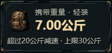
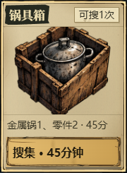
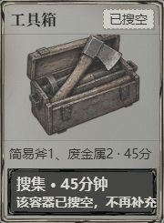

适者生存 · 主界面材质精修 v0.9
同一存档、同一视口、设备比例 1。拖动分界线看变化；左边是精修后，右边是 v0.8 原版。将页面缩放设为 100%，大图可右键单独打开查看原始像素。
← 精修后原版 →

携重面板：断开的墨线、角部露底、放大的背包。

锅具箱：旧纸边、墨刷标题、金色选中、放大的插画。

耗尽状态：灰纸和禁用按钮，保留真实状态文字。
验证截图使用隔离测试存档，未覆盖玩家浏览器存档。包含默认、悬停、键盘焦点、按下、禁用、对白、战斗和资源缺失回退的截图，见同目录 screenshots。完整结果与发布状态见《验收记录.md》。